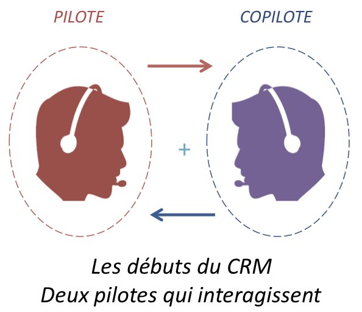
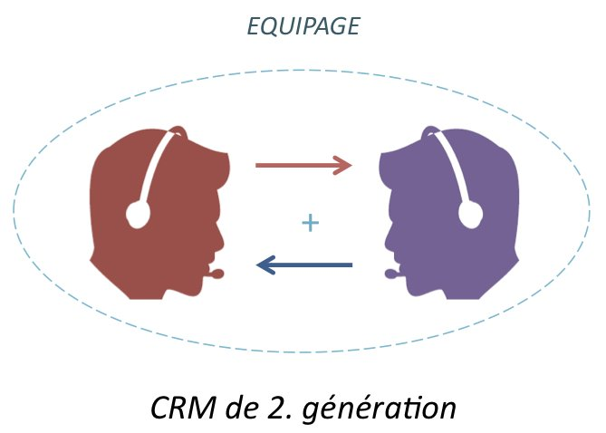

Lesson 01: CRM: Origins, Generations and the OM D Programme
Learning objectives
- Explain why CRM was created.
- Describe the generations of CRM up to TEM.
- Describe the company CRM/TEM training programme in the OM D.

Why CRM?
The study of dozens of air disasters in the 1970s showed the large share of non-technical factors: the most frequent human errors concerned communication, decision making and leadership — not flying skill. Technically competent crews had accidents because the team did not work.
The first question CRM had to answer: how can a young, inexperienced co-pilot tell an experienced captain that he is wrong — and how can the captain listen? The same question applies to a junior cabin crew member and the senior cabin crew member.
Generations of CRM

At the end of the 1980s CRM introduced the notion of a crew on the flight deck: Cockpit Resource Management became Crew Resource Management, with team building, stress management and situation awareness.

CRM is not only for pilots
In the 1990s CRM extended to cabin crew, maintenance, dispatch and ATC. It was then understood as a way to improve teamwork — and teamwork is one of the means to the end: fewer errors in flight.

Today: TEM
The latest generation widens the pilot's view to the environment and to time: which threats could become errors or undesired states, and how to anticipate them? TEM grew out of CRM line observations, which showed that anticipation is a keystone of safety — a move from a reactive to a proactive approach.
Tap a card to turn it over.
The company programme (OM D 1.5 and 2.4.5)
| Course | Duration |
|---|---|
| Initial CRM/TEM (joining the company) | 12 h |
| DCC — change of type | 6 h |
| DCC — change of operator | 6 h |
| Command course | 9 h |
| Recurrent training | 6 h each year; all initial elements in depth over a 3-year cycle |
The recurrent programme is updated from the results of crew CRM/TEM assessments. Crew members are not assessed on the CRM/TEM elements of recurrent training (OM D 2.4.5.2.5); CRM/TEM is observed in the simulator and on the line with the non-technical skills form (OM D 2.6.68).
OM D key elements and this course
| OM D key element (1.5.3) | Lessons |
|---|---|
| Human error and reliability; error chain; prevention and detection | 2, 5 |
| Company safety culture; SOPs; organisational factors | 3 |
| Threat and error management | 4–7 |
| Information acquisition and processing; situation awareness; workload management | 8 |
| Decision making; stress, stress management, fatigue and vigilance | 9 |
OM D key elements and this course (2)
| OM D key element (1.5.3) | Lessons |
|---|---|
| Communication and co-ordination inside and outside the flight deck; leadership and team behaviour; synergy | 10 |
| Automation and philosophy of the use of automation | 11 |
| Assessment of non-technical skills (2.6.68) | 12 |
| Case studies | 7, 11, 13 |
Key takeaways
- CRM was born from accidents caused by communication, decision and leadership failures.
- Cockpit → Crew → all trades → TEM: from reactive to proactive.
- OM D: initial 12 h, DCC 6 h, command 9 h, recurrent 6 h with every element in depth over 3 years.
Knowledge check
According to the OM D, how long is the initial CRM/TEM course?
- 6 h
- 9 h
- 12 h
- 18 h
Answer: C. 12 h initial; 6 h recurrent and DCC; 9 h for the command course.